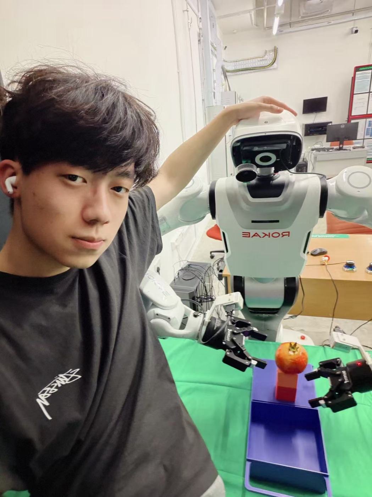

Working side by side with robots.
我是刘一舟，关注具身智能、机器人视觉与移动操作。这里记录的不只是代码， 也包括我在真实机器人平台上的数据采集、系统调试和实验过程。

我是刘一舟，关注具身智能、机器人视觉与移动操作。这里记录的不只是代码， 也包括我在真实机器人平台上的数据采集、系统调试和实验过程。

Selected Work
Robotics, embodied AI and perception.

Unitree G1 · Humanoid Robot
面向 Unitree G1 的具身智能项目，探索视觉感知、三维定位、机器人数据采集、 策略学习与真机控制。
View project
ROKAE · Wheeled Dual-Arm Robot
面向 ROKAE 轮式双臂机器人的数据采集与移动操作项目，记录机器人状态、 双臂关节数据和任务过程，为感知、模仿学习与操作策略研究提供数据基础。
View projectMy Journey
中国石油大学（华东）
NTU · School of Electrical and Electronic Engineering
MARS Lab
加入机器人与具身智能方向的研究工作。